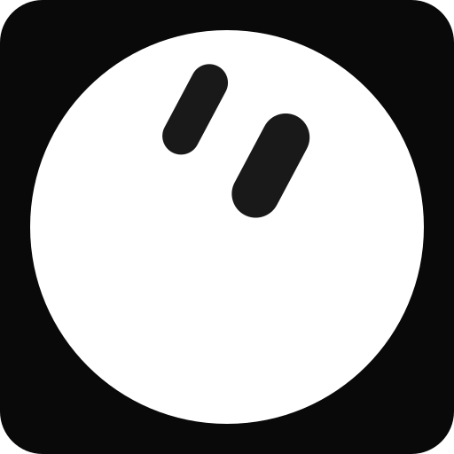

Try the local simulator today. Grok Bot and hardware connection tests are still ahead.
A conceptual route to the virtual light. No Grok Bot connection.
LED off · 0 button events · connected
Interactive illustration · simulated devices
Static conceptual routes are shown above. JavaScript enables the browser light controls. Download and run the local simulator kit ↗